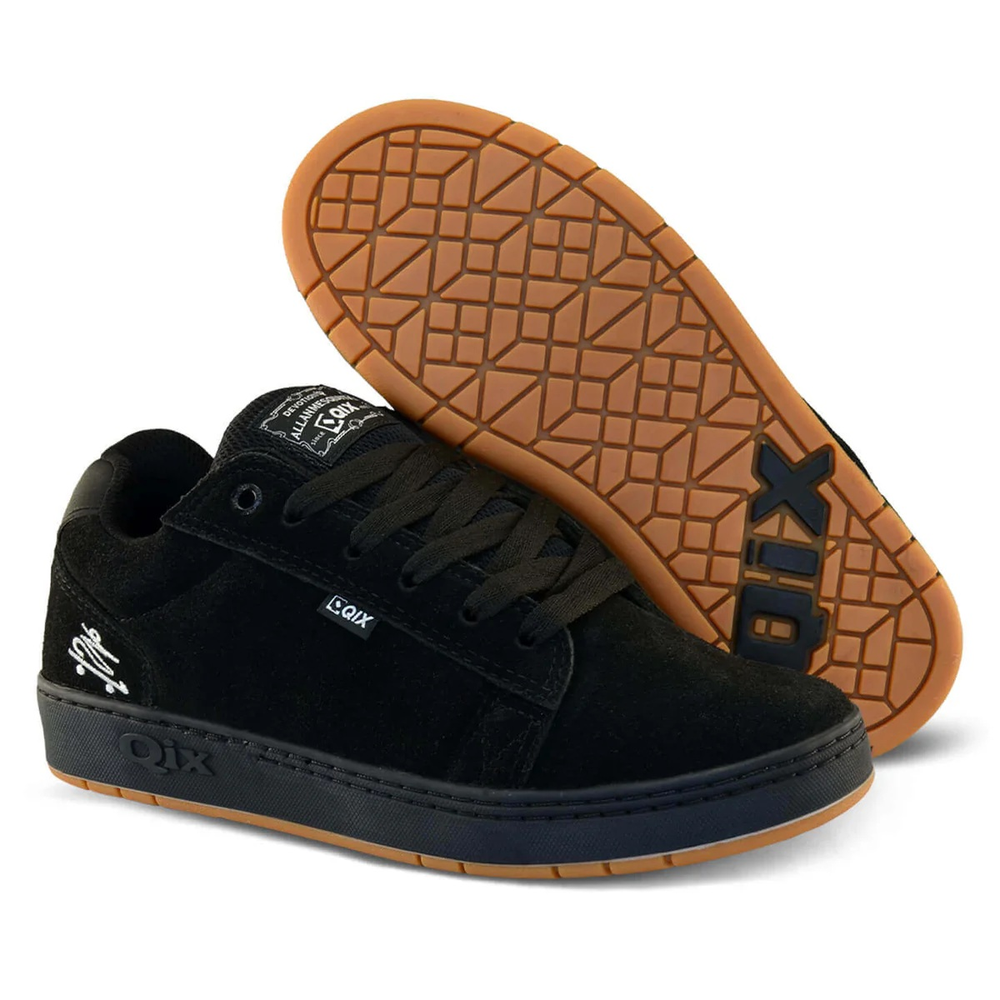
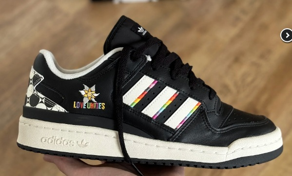

Inspirado no skate e na cultura urbana, o modelo Chorão Pro Model oferece conforto, resistência e um visual autêntico para o dia a dia.
R$ 439,90
Adicionar ao Carrinho
Modelo moderno com design exclusivo e conforto ideal para o dia a dia.
R$ 549,90
Adicionar ao CarrinhoO mercado de sneakers tem apresentado um crescimento significativo nos últimos anos, impulsionado pela cultura urbana e pelo aumento da procura por conforto e estilo no dia a dia. Marcas tradicionais e novos lançamentos têm atraído não apenas atletas, mas também o público jovem e amantes da moda.
Modelos exclusivos e colaborações com artistas e designers vêm se tornando cada vez mais comuns, transformando os tênis em verdadeiros itens de coleção. Além disso, o comércio online tem facilitado o acesso a lançamentos e ampliado o alcance das marcas.
Especialistas apontam que a tendência é que o setor continue crescendo, trazendo inovações em design, tecnologia e sustentabilidade para os próximos anos.